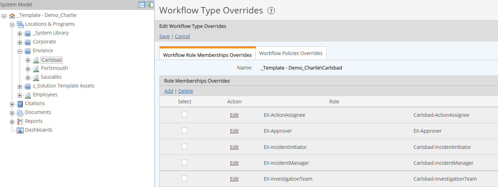
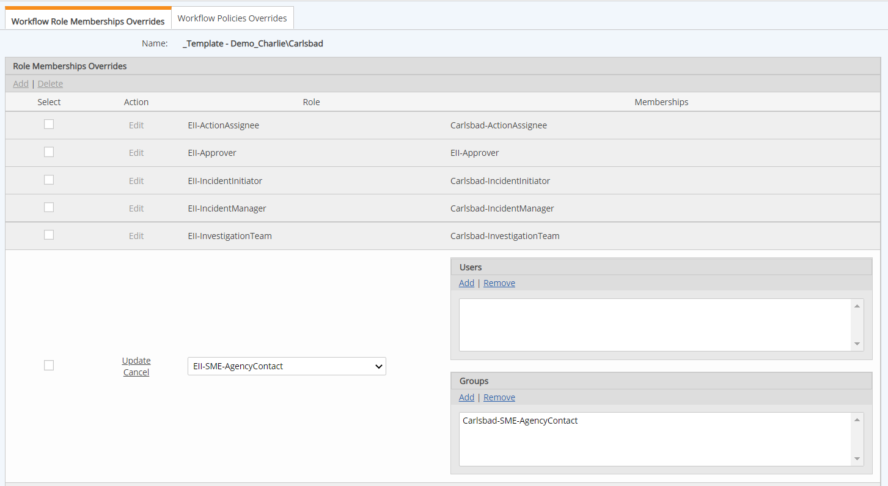

You will need to set up Workflow Membership Overrides for each Facility to allow users to create, respond to, and document incidents, according to their appropriate roles. You can create a Facility-specific group for each App Role (listed below) to use for Workflow Overrides.
Workflow Overrides also need to be created for the Employees. Use the same Groups to associate to the Roles on the Employees facility (which contains the Employee POIs).
The recommended setup for Facility and Employees overrides is:
For each facility, set role overrides for each role based on the facility, using the appropriate facility-specific Group.
For the Employees facility, include ALL role override memberships from ALL facilities, using the same Groups that were used on the facilities.
If two or more Facilities are related to an incident, the role membership is dictated by the union of Role Memberships for the selected Facilities (i.e., users or groups that are role members for all selected Facilities), looking at Users and Groups independently. To resolve the role members, the system looks for User-User and Group-Group matches, and does not look for Users in Group.
Users associated with more than one Role will have the combination of rights of all roles to which they belong.
The App Roles and the allowed functions are:
EII-IncidentInitiator: The users who can create an incident (for the entities for which they have View permission). They can only see incident records for the incidents they create. They cannot see any incident details, root causes or corrective actions.
EII-IncidentManager:The users who can update, view, remove, edit the fields for any of the forms.
EII-InvestigationTeam: The users who can be assigned to the incident Investigation step, and view and edit the form fields.
EII-Approver: The users who can be assigned to the incident Review step and approve and close the workflow.
EII-SME-[Type]: The users who provide additional details based on the incident type. They can view and report on all of the incident fields but can only edit the fields in the form for the Incident Type for which they are responsible.
EII-ActionAssignee: The users who can be assigned a corrective action to complete.
EII-View Only: Any users who may need to view or report on an incident in which they are not directly involved. They can view and report on all fields.
EII-Supervisor: Any users who may need to view or report on an incident in which they are not directly involved. They can view and report on all fields. The primary purpose of this role is to receive notifications related to incidents for which they are supervisors.
Creator: The person who creates the form/record. This user can generally view/edit all fields for the records they create. This is a default workflow role, which does not have specific group association.
Assignee: The person to whom the actions/steps are assigned. This is primarily the individual who is acting as the Action assignee. They cannot see any details related to the incident, but can see all the fields for the action which is assigned to them and edit only the "action taken" field. This is a default workflow role, which does not have specific group association.
To view or edit Role overrides, right click the facility and choose Change > Workflow Overrides.
In the Workflow Role Memberships Override tab the Roles and associated groups are shown.

To edit the associations (add or delete a group), click Edit for the Role. You can then add or delete groups or users as desired.

You can create Facility-specific groups and assign users to these groups in Security Manager.